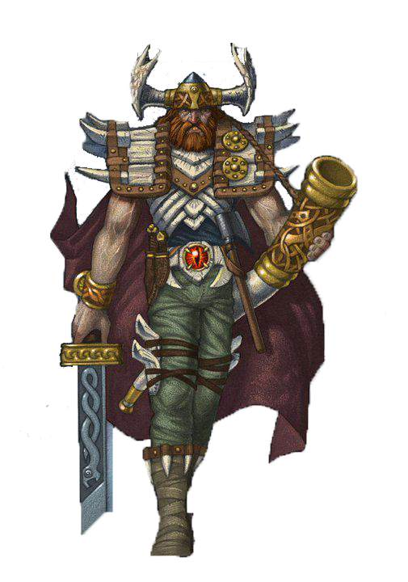
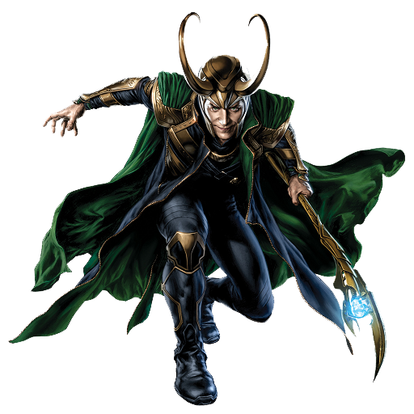

Shakil's Lab
Server currently under development
Server currently under development
Home |
Projects |
About |
About |
About |
About |
About |

HeimdallrHeimdallr is a discord bot written in Python. Monitors all members. communicate with developers without sending DM or joining the home server. Confidential report. Best admin tool |

LokiLoki is a IoT based AI written in Python, inspired by JARVIS, existing in Multiple server like Facebook, Slack, Discord and Home server has access to your device on your network and remote. Chatbot, Cyber Security Expert. |

CyrusCyrus is a basic hash cracking tool for widows OS Written in Python |
Github page